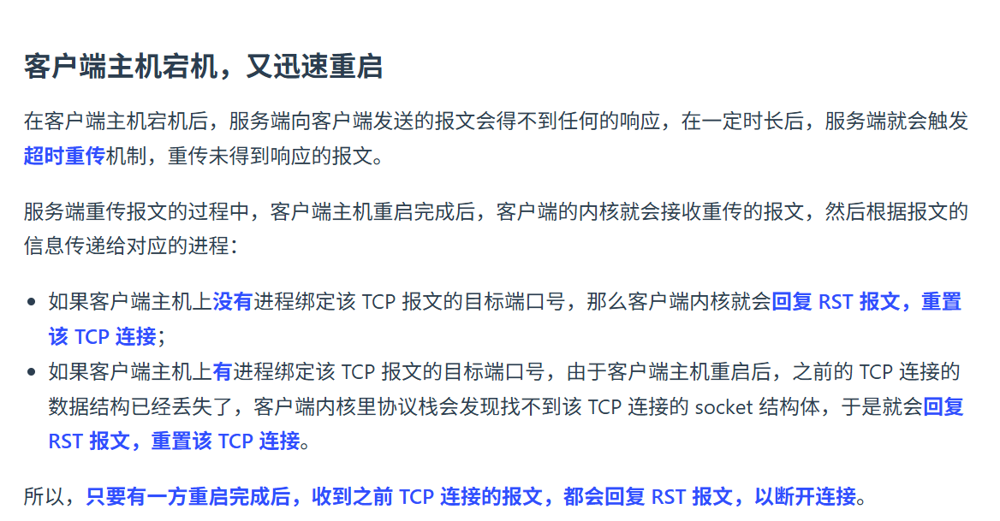
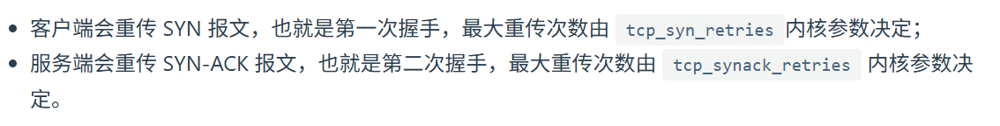
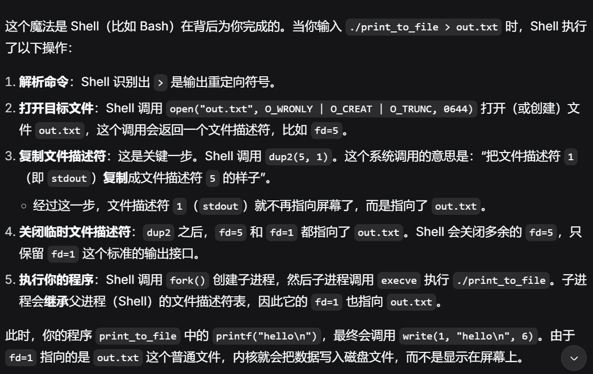
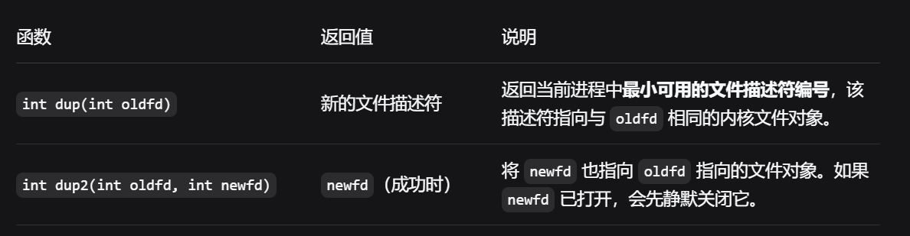
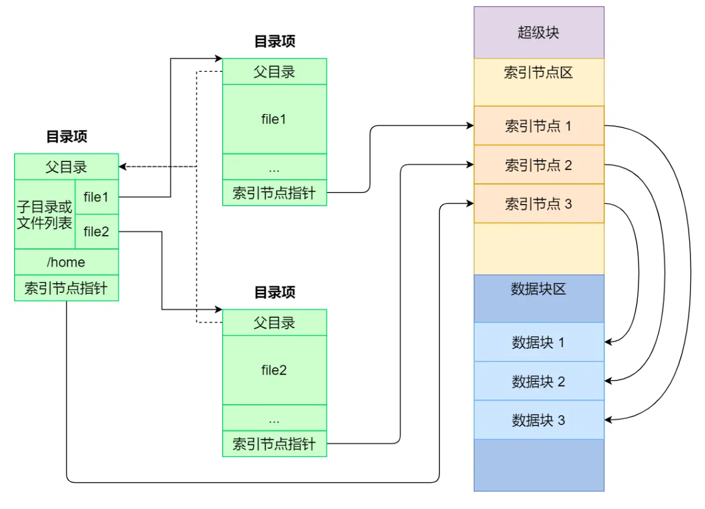
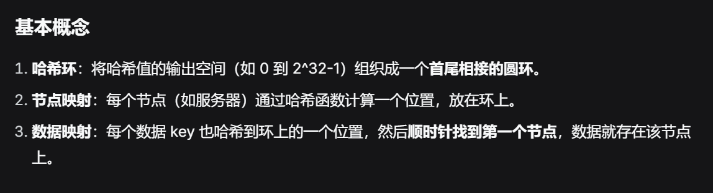
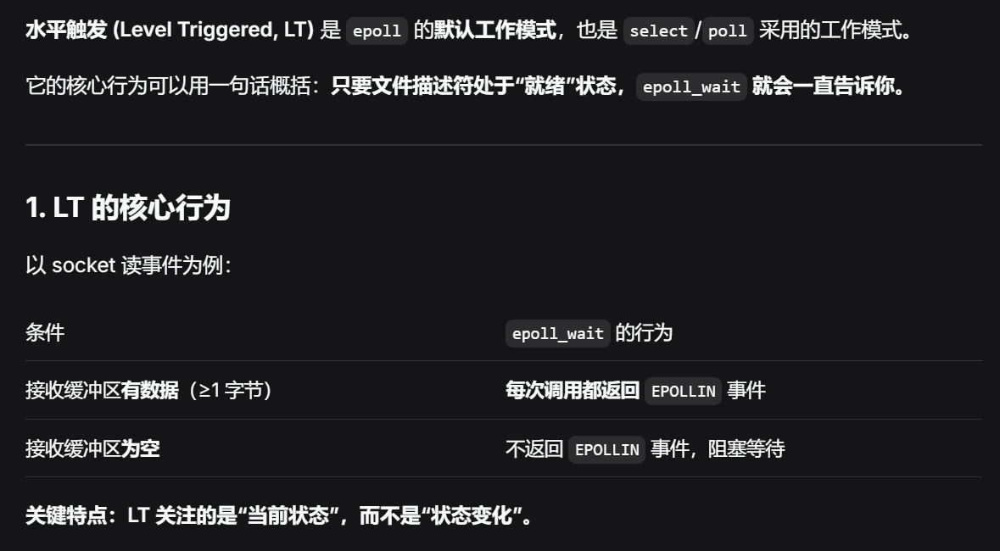

计算机网络
TCP异常连接
宕机和进程崩溃

https://xiaolincoding.com/network/3_tcp/tcp_down_and_crash.html#%E8%BF%9B%E7%A8%8B%E5%B4%A9%E6%BA%83在发数据的情况下
如果是进程崩溃，内核可以优雅地和peer完成4次挥手。但是宕机又重启，且有数据传输，会回RST。
如果宕机未重启，会超时重传，根据tcp_retries以及RTO，达到阈值后，断开连接
不发数据，就以来KeepAlive报文探查，但需要很长时间。一般上层会进行探查，如http的KeepAlive和KeepAliveTimeout
握手丢失
第一次挥手丢失，重传tcp_syn_retries次，Close连接
第二次丢失，双方都会重传

第三次丢失，重传SYN_ACK。注意，接受方（服务端）不需要那个丢失的 ACK 了，只要后续报文没丢，连接就能正常建立。
挥手丢失
操作系统
管道，重定向
内核级重定向

可以用dup进行保存，并恢复，当dup2完成后，原来的fd被删除了
用户级重定向
#include <iostream>
#include <fstream>
int main() {
// 1. 保存原来的缓冲区
std::streambuf* old_buf = std::cout.rdbuf();
// 2. 打开文件，把 cout 重定向到文件
std::ofstream file("output.txt");
std::cout.rdbuf(file.rdbuf());
// 3. 这个输出会进文件，不是屏幕
std::cout << "Hello, redirected!" << std::endl;
// 4. 恢复
std::cout.rdbuf(old_buf);
// 5. 这个输出回到屏幕
std::cout << "Back to console" << std::endl;
return 0;
}
文件系统
每个文件都对应有两个数据结构inode和dentry，dentry并不需要落盘，实时创建。
inode不会记录文件名或目录名，dentry用来做文件名到inode的映射。

路径查找过程
操作系统启动时 dentry cache 是空的，但仍然能根据路径找到 inode，流程如下：
查找 /home/user/test.txt
根目录 inode
根目录 / 的 inode 是已知/固定的，内核直接知道其 inode 号
逐级解析
读取根目录文件内容 → 找到 home 对应的 inode 号
根据 inode 加载 home 目录 → 在其内容中找到 user
根据 inode 加载 user 目录 → 找到 test.txt
创建 dentry
每解析一层路径，就创建对应的 dentry 并加入缓存
下次再访问同样的路径时就能直接命中缓存
存储结构
一般将逻辑块（4KB），分为块组。每个块组内有，超级块、inode表、数据块、块组信息(inode位图、块位图)等。 注意位图是管理空闲块的。 对于非空闲块，在Unix中，往往是通过inode的索引结构管理。可能有一二级索引、连续块、隐式链表等。
哈希一致性
主要是解决通过hash进行负载均衡的分配时，再迁移过程中，出现的迁移量很大的问题。

原环： Node A ──→ Node B ──→ Node C ──→ (回到 Node A)新增 Node D 放在 Node A 和 Node B 之间： Node A ──→ Node D ──→ Node B ──→ Node C ──→ (回到 Node A)
受影响的数据： 只有原本在环上位于 (Node A, Node D] 区间的 key 需要从 Node B 迁移到 Node D 其他所有 key 完全不受影响
IO多路复用
边缘触发和水平触发
ET
当缓冲区状态从空变成非空时，会触发IO事件。 如果你处理了这次IO，但是缓冲区还有剩余数据。 除非下次通知，否则你并不知道还有数据，就会丢失数据。
LT
感觉ET很糟糕，为什么不同LT？
